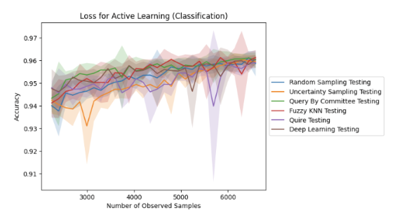

BatchBlend: Batch-Aware Interpretable Probabilistic Graphical Model for Integrating Spatially Resolved Transcriptomes (Aug 2024 - May 2025)
While multi-sample spatially-resolved transcriptomics (mSRT) technologies have enhanced our ability to compare different
tissues across conditions and time points, they often introduce technical artifacts or batch effects that confound biological
interpretability. Current batch effect correction methods either sacrifice interpretability for performance or fail to adequately
leverage spatial context. BatchBlend addresses this gap by extending the interpretable framework of Popari with an
explicit batch effect term, enabling the separation of technical variation from biological signal while maintaining an interpretable
framework. The model is formulated as a non-negative matrix factorization with hidden Markov random fields (NMF-HMRF) similar to
Popari with an added sample-specific batch effect term. Through comprehensive evaluation on simulated mSRT data, BatchBlend
demonstrates competitive batch effect correction while maintaining moderate biological signal preservation compared to established methods:
PyLiger, scVI, and STAligner. In addition, BatchBlend's performance in batch effect correction on mouse brain
coronal slices was analyzed when integrating data from MERFISH, MERSCOPE and STARmap. While BatchBlend offers an interpretable approach
to mSRT batch correction, further methodological refinements are needed to fully leverage spatial context during integration, presenting promising
directions for future research to enhance both integration quality and biological signal preservation in spatially resolved transcriptomics.
Thesis.
Codebase.
Open Targets Biocypher Knowledge Graph (Jan - May 2025)
This project, as a Masters Capstone partnership with UndauntedBio, created a biological knowledge graph from OpenTargets data and
loads it into a Neo4j database. The knowledge graph captures relationships between diseases, targets, and molecules, providing a
comprehensive resource for drug discovery and biomedical research. Particularly it highlights potential for drug repurposing and
discovery novel therapeutucs. We also developed a user-friendly web application which utilized an LLM to allow users to query the knowledge graph
through natural language. The application provides a seamless interface for researchers to explore the knowledge graph and gain insights.
Learn More.

Biologically-Guided Active Learning for Transcriptomic Classification of Aplastic Anemia (Mar - Apr 2025)
Aplastic anemia (AA) is a rare bone marrow failure disorder requiring improved diagnostic approaches. In this study, we plan on
working with single-cell transcriptomic profiles from HSPCs and T cells of AA patients and healthy donors to develop a classification
model using prominent active learning algorithms in the field. These algorithms strategically select the most informative samples for
labeling, addressing the challenge of limited labeled data availability in rare diseases. We plan to compare these active learning
strategies against a passive learning baseline, evaluating both classification accuracy and the number of samples it takes to achieve
optimal accuracy. After developing these active learning strategies, we plan to examine the features or genes prioritized by active
learning to develop the optimal model and compare those with traditional differential expression analysis, providing biological validation
of our computational approach
Learn More.
TeTIA (Temporal Text and Image-Guided Audio Synthesis) (Nov - Dec 2024)
The generation of high quality, realistic audio from textual descriptions using latent diffusion models (LDMs) have shown exceptional promise but suffer
from semantic misalignment and temporal reasoning. Recent advancements have shown that the use of a structured-text encoder has aided in learning
semantic alignment during the diffusion denoising process, but still does not achieve perfect alignment. In a class project for Generative AI at
Carnegie Mellon University, we extended the work of Make-An-Audio 2 by building a model, TeTIA that uses visual information in addition to the caption
to better capture the temporal nature of text. Our experiments show our model and Make-An-Audio 2 performed similarly, with our model slightly improving on the baseline.
Learn More.

PubMed Search Engine (May - Aug 2024)
As an intern at GEn1E Lifesciences, I developed a PubMed search engine which aids researchers to review published papers to gain insights into
ongoing work in the field of drug discovery that gathers more detailed information than standard PubMed searches. Therefore using Large Language
Models (LLMs) and Knowledge Graphs, the tool I developed can enhance our understanding of relevant studies that aid in advancing precision therapies.

Generating COVID-19 Sequencing Data Through a Graphical Representation of DNA Sequence (Apr - May 2024)
In a class project at Carnegie Mellon University, we applied graphical methods discussed in our course to see if these tools can produce plausible mutated sequences of
COVID-19. We specifically assessed Hidden Markov Models, Variational Autoencoders, and Generative Adversarial Networks, to evaluate their effectiveness. To measure the
success of the methods, which we compared the GC content of our generated sequences and performed local alignment against a consensus COVID-19 genome. This dual approach
not only tests the structural accuracy of our models but also their practical applicability in simulating the evolutionary dynamics of the virus.
Learn More.

SIMON - SIgnal siMulated by diffusiON (May - Aug 2023)
SIMON is a conditional diffusion based machine learning model which generates large amounts of ONT signal data from a nucleotide sequence. This tool
will help provide adequate amounts of data for the QC Virology Development team at Regeneron to generate tools to help supplement current detection
protocols for viruses. Currently SIMON has been shown to perform well in generating sequencing data for CHO (mammalian) sequencing data.
Learn More.

TDM Protocol Analyzer (May - Aug 2022)
At Werfen Instrumentation Laboratory, Beacon, a throughput hemostasis testing device, there are multiple L3 boards which control varying number of L4 boards.
The communication between the L3 host and up to 7 L4 nodes is across a RS-485 bus which is built on a time-division multiplexing (TDM) principle. This means
there are packets of data that is exchanged between the L3 board and L4 boards regularly. Each cycle consists of a L3 board sending a fixed packet to specific
defined nodes and those nodes later respond with a status packet. This sniffer's goal is to analyze each of the packets that are sent across this bus and report it to the user.
Learn More.

Comparing Temporal Change of DNA Methylation Between Type 1 Diabetes Patients and Healthy Individual (Nov - Dec 2021)
In a class project at Carnegie Mellon University, we trained three Markov Models to model the change of methylation sites
with respect to age in individuals with type 1 diabetes and healthy individuals.
We prune and structurally compare Markov Models to identify distinct patterns
of methylation in healthy individuals and those with type 1 diabetes. Moreover,
we show these Markov Models are generalizable by using them to predict age
given unseen methylation sites and benchmark their performance against a linear
regression baseline and deep neural network.
Learn More.
Analysis of RNA-Seq from Organoids to Express Limited Tumor Heterogeneity (Jul 2019 - Aug 2021)
I worked with organoids in the Englander Institute for Precision Medicine to compare gene expression from Primary Tumor Samples to different stages in the organoid cell culture
(i.e. Passage 5 and Passage 10). Through Hierarchical Clustering, Principal Component Analysis (PCA) and differential gene expression analysis and clustering analysis, the results
demonstrated to what extent the organoids maintained their characteristics to a live tumor sample. The results suggested very little difference in some organoids and their matching
patient tumors. However, as tumors were cultured to organoids, the organoids clustered well from passage 5 to passage 10.
Learn More.

The Role of Glycoproteins and HLA Markers in the Fibrosis of Rheumatic Valvular Disease (Sep 2018 - Jun 2020)
I investigated how the impact of streptolysin treated T cells could influence the “fibrosis” process of differentiated myofibroblasts as evidenced by the production of EDA-fibronectin
and proliferation. CD4+, CD8+, and NK-92 T cell subsets were treated with streptolysin to determine the production of IFN-y, IL-6, and IL-17A. In addition, the secretome produced by
the streptolysin treated subsets of these T cells was added to the differentiated myofibroblasts to observe the “fibrosis” process. To examine the impact of contact with the myofibroblasts,
CD4+ and CD8+ T cells were cultured together with the myofibroblasts, as well as individually. In addition, HLA genes encoding MHC complexes were analyzed using
bioinformatics to determine if specific HLA types have a role in rheumatic heart disease. These MHC complexes bind to the T cell receptors, eliciting autoreactivity of the T cell,
facilitating fibrosis of the mitral valve. This project was performed at Bergen County Academies.
Learn More.

Virome Sniff (Jun 2017)
Developed a tool that would detect and visualize from NGS data. The tool would search for viruses in protein, rather than nucleotide
space to capture and characterize larger number of viruses and detect viruses- associated domains in the sample. My specific role within the project was to develop
the visualization and the user interface for the project. This project was performed over a few days at the New York Genome Center Hackathon.
Learn More.
{kind=link}
{kind=link}
{kind=link}
{kind=link}
{kind=link}